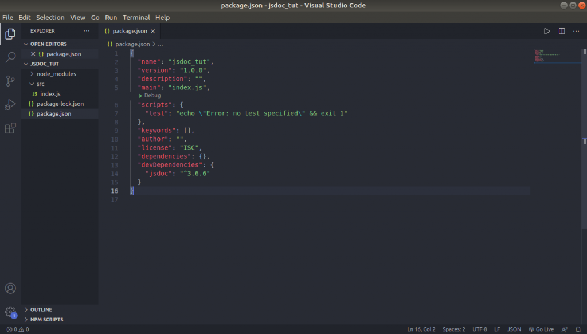
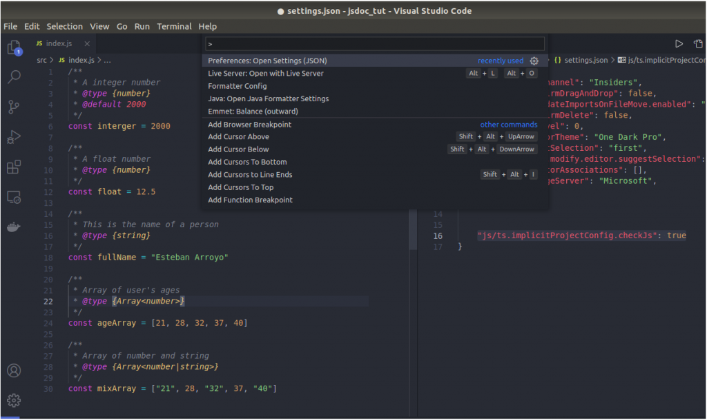

JSDoc permite documentar funciones, parámetros, clases, y métodos directamente en el código. Esto facilita a los desarrolladores entender la funcionalidad de cada parte del código sin necesidad de revisarlo en detalle.
JSDoc genera documentación en formato HTML de manera automática. Solo necesitas escribir comentarios siguiendo la sintaxis estándar, y JSDoc se encarga de generar páginas web organizadas y fáciles de navegar.
Al mantener la documentación junto con el código, se reduce el riesgo de que la documentación quede desactualizada. La documentación se puede actualizar rápidamente cuando se realizan cambios en el código.
